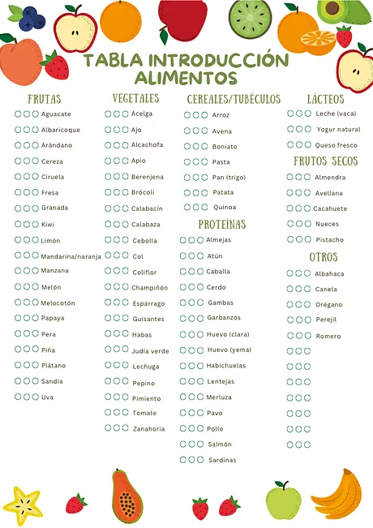
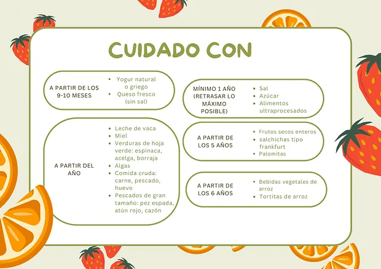

Charlas y talleres para tu grupo
Llevo la nutrición a empresas, colegios y AMPAS, asociaciones, gimnasios, farmacias y centros de salud. Sesiones prácticas, cercanas y basadas en la evidencia, adaptadas a quien las va a escuchar.

Este servicio es para ti si…
- Organizas actividades de salud en una empresa, un colegio o una asociación.
- Tienes una farmacia, un gimnasio o un centro y quieres ofrecer algo útil a tus clientes.
- Quieres una sesión práctica, con ejemplos y material, no solo una charla teórica.
- Buscas información fiable frente a los bulos de redes.
- Necesitas adaptar el contenido a un público concreto: familias, deportistas, mayores o equipos de trabajo.
Cómo funciona
- Primer contacto
Me cuentas tu idea
Para quién es, cuánta gente va a asistir, cuánto tiempo tenéis y dónde sería. Con eso te preparo un presupuesto sin compromiso.
- Preparación
Contenido a medida
Adapto el tema y los ejemplos a tu grupo y preparo el material: presentación, demostraciones o actividades prácticas.
- El día
Charla o taller
Una sesión dinámica y cercana, con tiempo para que el grupo pregunte todo lo que quiera.
- Después
Material para llevarse
Los asistentes se llevan un resumen práctico o una guía para aplicar en casa lo que han aprendido.
Algunos temas que ya he impartido: alimentación complementaria y BLW, etiquetado nutricional y nutrición en la lactancia. Cualquier otro tema se puede preparar a medida.
- Alimentación complementaria y BLW
- Salud digestiva sin dietas restrictivas
- Cómo organizar el menú semanal
- Aprender a leer etiquetas
- Cocina rápida y batch cooking
- Desmontando bulos de alimentación
Lo que te llevas a casa
Todo el material es propio y lo recibes en PDF para tenerlo siempre a mano. Estas son algunas muestras.



Cuánto cuesta
Te preparo un presupuesto sin compromiso según la duración, el número de asistentes y el lugar.
- Charla o taller
- Presupuesto a medida